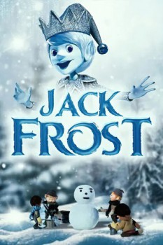

Country:United States, 48 minutes
Spoken languages:English
Genres:Family, Animation, Fantasy
Director(s):Jules Bass, Arthur Rankin Jr.
Writer(s):Romeo Muller
Video Codec:Unknown
Number: 85

Certification:G
Storyline:
Pardon-me Pete, the official groundhog of Groundhog Day, tells the story of Jack Frost, who falls in love with a beautiful young woman and begs Father Winter to make him human so that she can see him. His request is granted, but only on the condition that by the Spring he has a house, a bag of gold, a horse and a wife. But Jack finds that life as a human is more complicated than he thought.
Cast:
Buddy Hackett (voice of Pardon-Me-Pete), Robert Morse (voice of Jack Frost), Paul Frees (as Kubla Kraus / Father Winter (voices)), Larry Storch (voice of Papa), Dave Garroway (voice of Groundhog Day Television Reporter)
Medium: Media file,
Location: D:\$RECYCLE.BIN\$RP4ESGP\Jack Frost.mp4
Loaned: No
Aspect ratio: Unknown